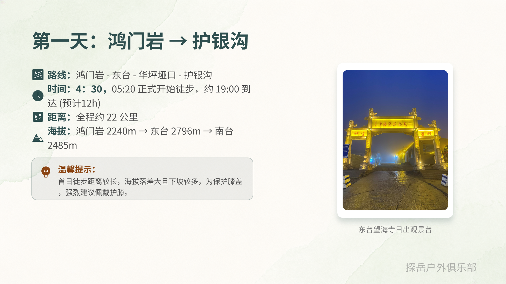
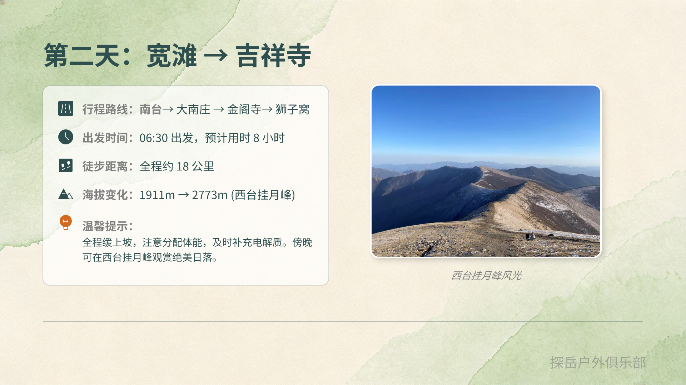
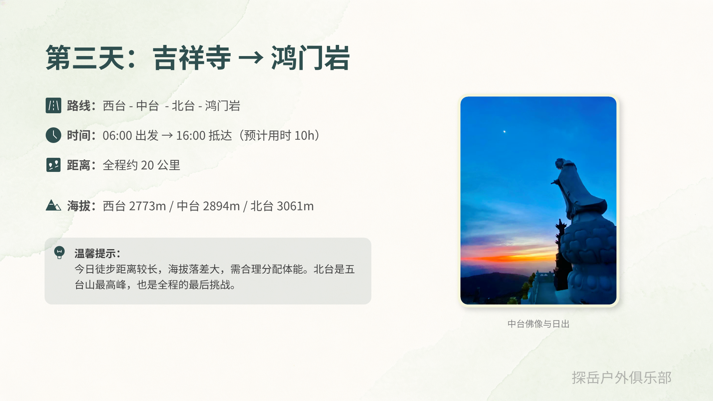
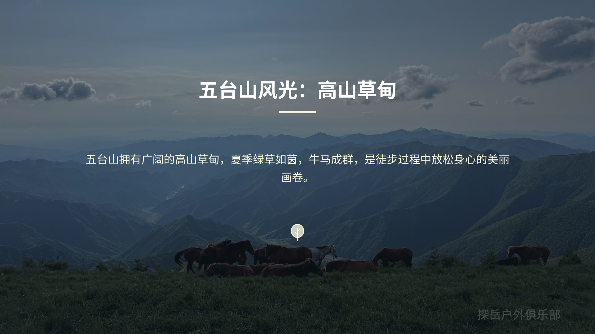
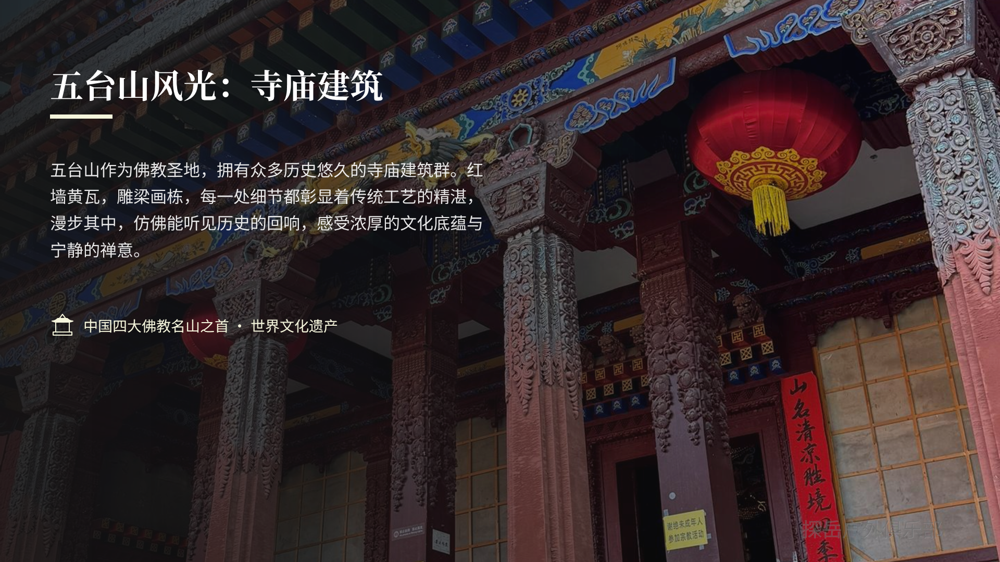
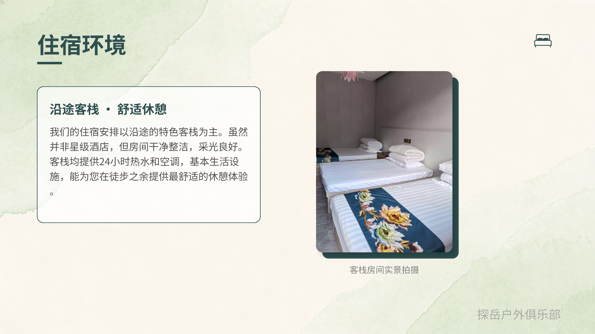
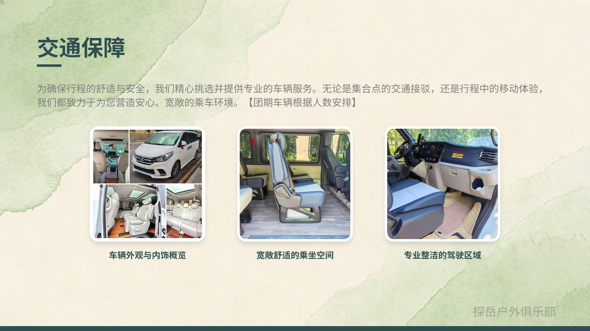
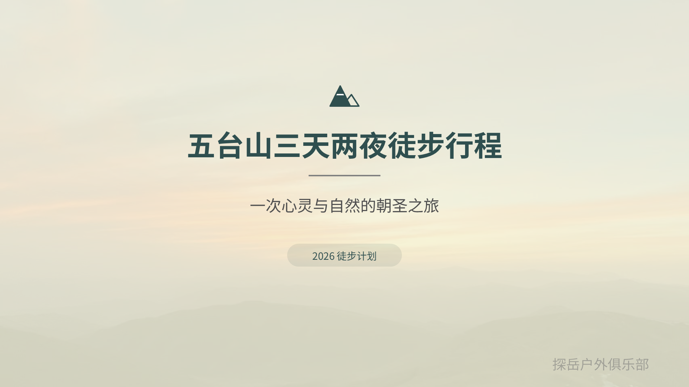

前一天在砂河镇集合，首日从鸿门岩起步，经东台、华坪垭口到护银沟；第二天穿越宽滩、狮子窝、吉祥寺一线；第三天经中台、北台完成闭环返回鸿门岩。
原 PPT 的“行程概览”和“目录”被整理成更适合阅读的概览区，先让用户快速判断是否适合自己，再继续看详细路线。
前一天在砂河镇集合，首日从鸿门岩起步，经东台、华坪垭口到护银沟；第二天穿越宽滩、狮子窝、吉祥寺一线；第三天经中台、北台完成闭环返回鸿门岩。
你能看到东台日出云海、高山草甸、月光寺与古刹群，也能在朝台线路中体验五台山最具代表性的自然与文化双重气质。
更适合已经有一定徒步基础、能连续三天稳定行进的人。路线不算极限，但海拔、距离和天气变化都要求你提前准备体能与装备。
这里把原来的三页路线说明拆成三个独立信息卡，重点放在你真正会关心的几个信息：怎么走、走多久、海拔怎么变化、当天最需要注意什么。
路线为鸿门岩 - 东台 - 华坪垭口 - 护银沟。前一天在砂河镇集合住宿，凌晨较早起步，正式徒步约从 05:20 开始，预计 19:00 左右到达。

第二天从宽滩出发，经过南台、大南庄、金阁寺、狮子窝，最终抵达吉祥寺一线。整体预计 06:30 起步，用时约 8 小时，适合把节奏控制在匀速巡航状态。

第三天线路为西台 - 中台 - 北台 - 鸿门岩，06:00 出发，预计 16:00 左右抵达终点。当天距离依然不短，但最关键的是体能分配和心理节奏。

这一段对应原 PPT 中最容易信息堆叠的部分。我把它拆成“必备装备”和“费用说明”两块，方便用户快速判断准备成本和报名条件。
宣传页里最需要“情绪价值”的地方，是让用户看到这次活动到底值不值得去。这里我把原来的风光页、住宿页、交通页做成了更像落地页的图文卡片。
东台望海寺是观看日出云海的代表点位。清晨光线和云海层次感很强，适合作为整段路线中最有记忆点的视觉高潮。

五台山的高山草甸在夏季非常出片。绿草、缓坡和开阔视野会让徒步过程不只是“赶路”，而是持续有景可看。

作为中国四大佛教名山之首，五台山的寺庙建筑群让这条线路不仅有自然景观，也有很强的人文层次和朝圣意味。

住宿以沿途特色客栈为主，不追求豪华，但强调干净整洁、热水、空调和基本生活设施，核心目标是让徒步后的恢复更稳。

页面保留了集合接驳和行程内交通保障的信息表达，重点突出乘坐空间、专业车辆和按人数安排车型的组织能力。

封面页被放回宣传页末段，用来强化活动主题和品牌感，让页面首尾呼应，而不是看完内容后直接断掉。
这部分对应原 PPT 的最后总结页。长页面里，我把它做成报名决策前的最后检查项，帮助用户在“想去”之外，判断自己是否“准备好了”。
现在这个文件已经从“PPT 播放内容”变成了“适合浏览和转发的宣传型长页面 H5”。如果你后续还要继续优化，我可以再帮你加报名按钮、微信二维码区、联系人信息、自动轮播图或部署版本。